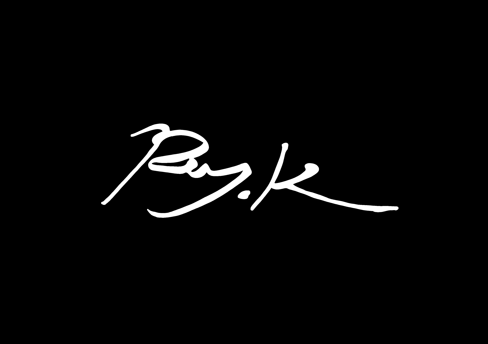

Sylvie......
-------------------------------------------------------------

-------------------------------------------------------------
本贴为所有吧友提供信息支持
本贴是2024.4.13版
--①-- 原版 ------------------------------------------------
Teaching Feeling -傷肌少女との生活-（旧名：奴隷との生活 ~Teaching Feeling~），中译名——希尔薇，由日本自由创作者Ray-K(Ray_Kbys)以TyranoScript引擎制作的ES类型(养成类)的galgame，于2015年10月27日在DLsite上发布，迅速大卖，居于r18各榜榜首，创造了不少于一千五百万人民币的流水。
2020年11月06日更新了正式版Ver3.0.19，2023年1月12日更新了正式版Ver4.0.0，最近一次更新在2023年1月25日，最新版本为ver4.0.6。
游戏女主角是Sylvie，中译名希尔薇，根据日语发音シルヴィ也被译作希露薇，但作为取意英语"silver"(银)的英文名，我们提倡希尔薇的译法。
游戏内容即为游戏名，你作为Sylvie的主人，与她生活，生活日常会随游戏的进展而丰富，最终是无尽的日常，也就是游戏不存在结局。不够详细？下面是艺术性内容概括。
内容介绍
一天，有人敲响了诊所大门......
来人是你过去救过的商人。
虽然说是要报答救命之恩，但是你知道......
他是看你的善良好甩掉一个包袱。
他带来一个少女，是从一个资产家分来的财产。
可以算作奴隶......
那又怎么样？
从她清晰可见的由脸蔓延到手臂上的褐红色烧灼痕迹可以猜到她身体的模样。
她的名叫...Sylvie......
你收留了她，在她空旷的眼神里只能看见迷茫与麻木，她说“以前的主人非常喜欢听到我哭叫的声音，每次听到都非常兴奋”…...
第一个夜晚，你准备了二人份的饭食，为她安排了一个房间......
接下来的日子，你安抚她，一同出了门，为她购置了一身打扮，带她去了咖啡厅，看她吃千层饼......
再之后的日子，你与她一起喝茶，开始让她帮忙工作，带她去镇外......
你同她生活，看着冰化开，互相倚赖......
在以后的时间，你依旧给她温暖的记忆......
--②-- 交配计划版 ------------------------------------------
希露薇的交配计划，由变态协会的REBEL力量领导制作的改版，基于原版2019年2月20日更新的ver2.5.0制作，主要版本为6.6.7与7.6.9，最新版本为8.0.3，此版本完全免费，作者在7.6.9版本发布时宣称不再更新。
改版主要内容介绍
翻译：REBEL力量与蝶小薇的翻译（未定），提供了高质量的汉化，不仅完全汉化了游戏内所有文本，还包括选项，图片内日文，且根据日语发音将希尔薇更名希露薇。
剧情：未对原版主剧情进行增减或修改，即依然没有结局。
相关：修改了游戏内对话文本，使Sylvie似乎更粘人；修改生病事件，使玩家能拿到第一个cg；添改人物立绘，由修改作者绘制；添加“妹汁面包”的选项一个，其cg一套，由修改作者绘制；将加红花替换为加精液，由修改作者绘制；确认添加奥蕾莉亚与涅芙依的cg各一套，即老板娘与服务员的cg，由修改作者绘制，其中涅芙依的cg条件是当有至强媚药时再去咖啡厅会出现“喂涅芙依”的选项，选择即可；添加裸体回家的cg一套，由修改作者绘制，在6.6.7版本中此cg是夜间独自出门时触发；添加阳台cg一套，即露台事件，条件是只穿“轻飘的衣服”到第二天，由修改作者绘制。
总之，此版本修改质量高，提供高质量汉化，增改多而质量高不突兀。游戏观贴合原版，非恶搞。
--③-- 越南版 ----------------------------------------------
即mod版，由越南河内府ichibikun整合制作的改版，主要版本为ver2.5.2和ver2.6.0，最新版本为ver2.6.1，于2022年8月22日更新。基于原版ver2.1.0制作，整合了一个日文改版和此日文改版的多个英文改版，有检索地套用了多个版本的修改，且有大量独立添加。
改版内容简述
此版本因内容繁多这里只做简述
翻译：游戏语言为越南语，目前有@木头k21领导的成体系翻译。
剧情：未对原版主剧情进行修改，即依然没有结局。
相关：引入金钱，天气，健康值三大系统；增加可进行行动与场景，不贴合原作；大范围细节优化（如修正和增加画面，衣服会坏，Sylvie会自己换衣服等等）；修改和添加大量cg以及支线剧情（来自ray.k其它作品的人物剧情及其cg）（例如添加了包括但不限于臼井幸（小幸）等众多人物的剧情cg）
总之，此版本修改质量高，剧情添加合理，设定有趣，游戏性大幅提高。游戏观有别与原版，非恶搞。
--④-- 结婚版 ----------------------------------------------
可结婚版，由蝶小薇制作的改版，基于原版2018年7月25日更新的ver2.3.1制作，主要版本为1.6.2和2.3.1，最新版本为2.3.1，此版本完全免费，作者已不再更新，作者组织已解散，游戏内所有联系方式已失效。
改版主要内容介绍
翻译：REBEL力量与蝶小薇的翻译
剧情：对原版主剧情进行了增添，即加入了结婚事件，当亲密度到达1500时，行动栏中出现“结婚”一项，选择即可，最后事件会接上与Sylvie第一次H，结束后可以继续游戏。
相关：添加奥蕾莉亚cg一套，夜晚去服装店让老板娘试衣服触发。
总之，此版本修改质量中等，主要提供高质量汉化，修改极少且不突兀，与原版最为相似，游戏观贴合原版，1.6.2非恶搞，2.3.1微恶搞。
--⑤-- 疯狂生活版 ------------------------------------------
與希露薇的瘋狂生活，由变态协会REBEL力量制作的改版，主要版本为7.0。
改版主要内容介绍
翻译：使用了REBEL力量与蝶小薇的翻译
剧情：未对原版主剧情进行增减或修改，即依然没有结局。
相关：修改Sylvie开场立绘，改为机械臂；新增和修改了事件及cg，包括喂食事件的食脑剧情，夜晚外出的挤乳play剧情，修改忍耐cg及剧情（使用的是交配计划的妹汁面包剧情）；添加结婚版老板娘cg
总之，此版本修改质量高，主要增加事件剧情，游戏性增加，特殊趣味性大幅增加，游戏观悖与原版，恶搞。
另外，此版本中出现的一些特殊图片（比如刚进游戏的主界面）是来源于原版作者ray.k的另一部作品幼虫，不属于改版，此版本仅使用了一些相关图片，基本无关。
关于幼虫，可参照
贴吧链接
--⑥-- 无伤版 ----------------------------------------------
即去疤痕版，由秦寿工作组制作的改版，信息不详，提供了去除伤痕的贴图，冷狐版使用了此版本的贴图。
--⑦-- 冷狐版 ----------------------------------------------
冷狐版，由冷月白狐制作的改版，基于原版2018年11月16日ver2.4.0制作，主要版本为3.0，最新版本为3.0，收费。
改版主要内容介绍
翻译：基于蝶小薇的翻译，改繁体为简体，轻度修改文本。
剧情：未对原版主剧情进行修改，即依然没有结局。
相关：修改开篇剧情，性质恶搞；大量修改游戏原场景图片，不贴合原作；添加结婚版老板娘cg；增加涅芙依事件，提供多套cg，恶搞，背离原作；修改服务员立绘，不贴合原作；增加穿越剧情，提供幼年老板娘和服务员各一套cg，性质恶搞，背离原作；大幅提高了亲爱度淫乱度增加，更改药剂名字，以及一系列恶搞小改。
总之，此版本修改质量低，大量低质量修改，多方套用，游戏观完全背离原版，纯恶搞。
--⑧-- 其他 ------------------------------------------------
六大主要改版部分结束，以下为非主要在册版本，登记无顺序
TA版——坚果社制作，剧情向。质量低，多方套用，剧情夭折，游戏观背离原版，恶搞。
爱与恨——坚果社制作，剧情向。质量中高，剧情另类，游戏观背离原版，恶搞。
AL版（Alternative_Life）——佚名，Ca清（id：T_gas）委托发布，剧情向，未完善。质量中高，剧情另类，游戏观背离原版，非恶搞。
---- 附加内容 --------------------------------------------
一、本概述排除了在制版本，制成会收录。
二、本概述排除了快餐版本，即以整个游戏为工具，只为显示一段特殊内容，或只有少量有意义内容的版本。
三、本概述排除了幽灵版本，即只修改一两个图片或文本和甚至根本“不存在”（只p了张图）的版本。
四、此概述由本人查阅资料与查阅游戏文件得出，可回复反馈。
五、有问题或要求可以回复提出，本人会积极回复，但本人并不负有帮助你的义务。
六、本贴不允许任何问取资源存在，看吧规，加吧群有条件，吧里搜搜找找就有了。
本贴是2024.4.13版，上一版为2023.1.25版（累计有阅读数：5.7w、点赞数：900、回复数300）